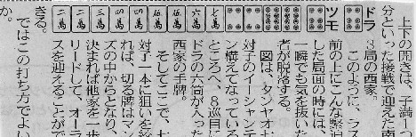

（47）ドラキールの法則？
お久しぶりのココで何切る(^-^；07年７/20の某スポーツ紙。

牌姿を見て、（ドラ引きのチートイもあるから切り...）と思いつつ、状況設定を読む。な〜るほろ。しかし「七対子一本に狙いに絞れば、切る牌は万子」と云ったって、チートイに絞らなくても常識的には切る牌は万子しかない。そいで（これくらいの状況なら、やっぱり
すると「ここで万子を切ってチートイツ一本に絞るのは確率が低い。それよりここは打と構えて、
か
の入りを待つ手を上としたい」とあった。え〜....
それにや
ならともかく、
たしかにを引いたときにテンパイにならんのはちとさびしい。おまけに
とか
を引いたとき、テンパイをとろうと思ったらドラキールとなるし....